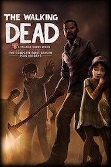

The Walking Dead: Season 1 Review- Choice Disguised

The Walking Dead Season 1 is a solid game, with many simple and uninteresting gameplay mechanics, combined with choices that are more scripted and more like shallow plot development than anything else. Although I have these issues, The Walking Dead Season 1 tells a compelling and well characterised story.
A man named Lee is travelling in a police car when it runs off the road and the police man turns into a zombie and Lee has to kill it. Lee finds a house for supplies and meets a girl named Clementine who he takes with on his journey to survive. The rest of the game is basically just a story, so I won't delve into it as the story is well told and one of the best in any video game. The art style is unique and resembles are comic in ways, creating gore to be slightly over the top, but traumatising at the same time. The game is paced perfectly as each part of the game is sectioned into episodes. Each episode tells an interesting story and none of them are objectively bad. There are some episodes I like better than others, my favourites being 2 and 6, but I think they are all well done. There are many twists, emotional moments and difficult choices you are forced to make. Most of these choices do not effect anything in the long run and I was disappointed by this, as games like Heavy Rain had more of a long term impact depending, on choices you make. There are still a few choices that do effect the long term and these were the choices that had the most impact. The story itself is one of the best video game tales ever told, but the choices are shallow at many points and some do not have much of an impact.
The gameplay is very simplistic and this is a massive flaw in The Walking Dead Season 1. There are many slow walking segments where you have to find something or talk to someone and it is just not innovative at all. There are also quicktime events that usually display a lot of spectacle, but are simple as they are just 2 or 3 button clicks. The quicktime sections are usually tense and are visually interesting. There are also dialogue options which again are a click of one singular button and choices, which again are a click of a button. These options are fine, but only when they branch off into a long time effect. There is not much else that the gameplay does to shine and at its core is very simple.
The Walking Dead Season 1 has one of the most well told stories in any video game. It falls flat in the gameplay department and many of its choices are shallow, as well as dull. The Walking Dead Season 1 is a solid experience and is a must play for anyone who is a Walking Dead or story game fan.